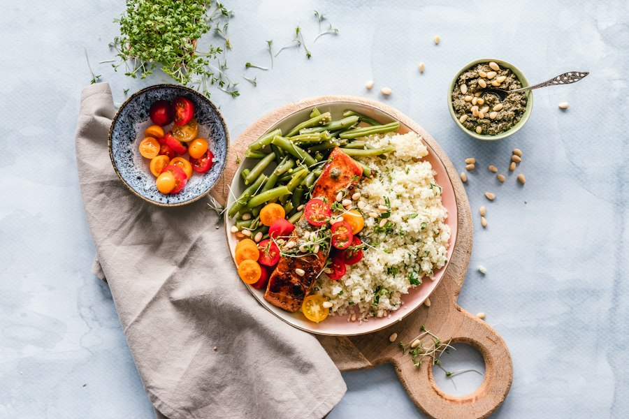
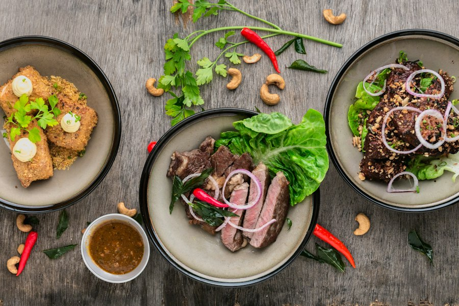

Five typography systems for Food Diary
Same palette, same layout, same Diary and Map content in every preview. Only the type system changes. Desktop and phone previews use the real fonts loaded in this page.
Visual exploration only. No production code changed. Thai line is a labelled font specimen, not site copy. All fonts shown have a Thai subset and a system fallback.
Quiet Serif
Editorial / literaryHeading Pridi · Body Noto Sans Thai · Labels IBM Plex Sans Thai
 PLATE 001
PLATE 001Sample Shop
Rich broth, tender pork. Replace this with your own note.
Read entry →


PLATE 001Sample Shop
Rich broth, tender pork. Replace this with your own note.
Read entry →| Role | Font | Size (desk / mob) | Weight | Line height | Letter spacing |
|---|---|---|---|---|---|
| Heading | Pridi | 64 / 40px | 500 | 1.12 | -0.02em |
| Body | Noto Sans Thai | 17 / 16px | 400 | 1.75 | 0 |
| Label | IBM Plex Sans Thai | 12px | 500 | 1.4 | 0.12em |
Strengths A real Thai serif gives the page a printed, considered voice. Latin and Thai share the same bookish character.
Weaknesses Pridi is the most literary option here; small Thai serif labels can look light on a phone.
Civic Sans
Neutral / highly legibleHeading Sarabun · Body Sarabun · Labels IBM Plex Sans Thai
PLATE 001Sample Shop
Rich broth, tender pork. Replace this with your own note.
Read entry →PLATE 001Sample Shop
Rich broth, tender pork. Replace this with your own note.
Read entry →| Role | Font | Size (desk / mob) | Weight | Line height | Letter spacing |
|---|---|---|---|---|---|
| Heading | Sarabun | 60 / 38px | 600 | 1.15 | -0.02em |
| Body | Sarabun | 17 / 16px | 400 | 1.75 | 0 |
| Label | IBM Plex Sans Thai | 12px | 500 | 1.4 | 0.12em |
Strengths Sarabun was designed for Thai government use: exceptionally clear at small sizes and on low-end phones.
Weaknesses The least distinctive option. It reads correct and calm, but not especially personal.
Modern Grotesk
Contemporary / preciseHeading Prompt · Body Prompt · Labels Krub
PLATE 001Sample Shop
Rich broth, tender pork. Replace this with your own note.
Read entry →PLATE 001Sample Shop
Rich broth, tender pork. Replace this with your own note.
Read entry →| Role | Font | Size (desk / mob) | Weight | Line height | Letter spacing |
|---|---|---|---|---|---|
| Heading | Prompt | 62 / 40px | 600 | 1.1 | -0.03em |
| Body | Prompt | 17 / 16px | 400 | 1.7 | 0 |
| Label | Krub | 12px | 500 | 1.4 | 0.14em |
Strengths Prompt pairs Thai and Latin with the same modern geometry. Clean hierarchy, strong shop names, good mobile rhythm.
Weaknesses Slightly app-like in tone; long Thai notes feel cooler than the personal-journal brief.
Humanist Loop
Soft / humanHeading IBM Plex Sans Thai Looped · Body IBM Plex Sans Thai · Labels IBM Plex Sans Thai
PLATE 001Sample Shop
Rich broth, tender pork. Replace this with your own note.
Read entry →PLATE 001Sample Shop
Rich broth, tender pork. Replace this with your own note.
Read entry →| Role | Font | Size (desk / mob) | Weight | Line height | Letter spacing |
|---|---|---|---|---|---|
| Heading | IBM Plex Sans Thai Looped | 60 / 38px | 600 | 1.15 | -0.02em |
| Body | IBM Plex Sans Thai | 17 / 16px | 400 | 1.75 | 0 |
| Label | IBM Plex Sans Thai | 12px | 500 | 1.4 | 0.12em |
Strengths The looped Thai forms are warm and forgiving on a small screen. Best pure readability of the five.
Weaknesses Softer and more casual; gives the diary less editorial authority than the serif options.
Book Serif
Refined / print-ledHeading Taviraj · Body Noto Sans Thai · Labels Noto Sans Thai
PLATE 001Sample Shop
Rich broth, tender pork. Replace this with your own note.
Read entry →PLATE 001Sample Shop
Rich broth, tender pork. Replace this with your own note.
Read entry →| Role | Font | Size (desk / mob) | Weight | Line height | Letter spacing |
|---|---|---|---|---|---|
| Heading | Taviraj | 64 / 40px | 500 | 1.12 | -0.015em |
| Body | Noto Sans Thai | 17 / 16px | 400 | 1.8 | 0 |
| Label | Noto Sans Thai | 12px | 500 | 1.4 | 0.10em |
Strengths The strongest magazine character. Taviraj gives Thai headings real presence without becoming decorative.
Weaknesses Thai serif is less crisp than sans at 12px, and the tone is more formal than a casual food log.